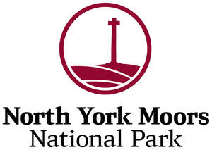

Trade Mark Journal No.2025/024 13 June 2025
UK00004129364 26 November 2024 (3,9,12,16,18,21,25,28,29,30,32,33,35,38,39,41,43)
Mark 1
Mark 2

- Class 3
- Soaps; Perfumery; Essential Oils; Cosmetics; Hair Lotions.
- Class 9
- Compact Discs, DVDs and other digital recording media; Mechanisms for coin-operated apparatus.
- Class 12
- Vehicles; Wheelchairs.
- Class 16
- Photographs; Stationery; Artists Materials; Instructional and Teaching Material; Pencil erasers; Erasers; Pencil sharpeners; Rulers.
- Class 18
- Rucksacks; Purses; Umbrellas and Walking Sticks.
- Class 21
- Coffee Cups; Coffee Mugs; Tea Cups; Tea Mugs; Tea Pots; Decorative Plates; Desert Plates; Beer Glasses; Glass Cups; Pint Glasses; Wine Glasses; Beverage Glassware; Cups; Plastic cups; Water bottles.
- Class 25
- Clothing; Headgear; Polo shirts; Short-sleeved shirts; T-shirts; Jerseys [clothing], Sweaters; Jackets, Fleece Jackets; Caps [headwear].
- Class 28
- Games and Playthings; Sporting Articles; Teddy bears; Stuffed toy bears; Stuffed toy animals; Balls for play; Frisbee.
- Class 29
- Meat, Fish, Poultry and Game; Meat Extracts; Preserved, Dried and Cooked Fruits and Vegetables; Jellies, Jams, Compotes; Eggs, Milk and Milk Products; Edible Oils and Fats; Prepared Meals; Soups and Potato Crisps.
- Class 30
- Coffee, Tea, Cocoa; Flour and preparations made from Cereals, Bread, Pastry and Confectionery, Edible Ices; Honey; Vinegar, Sauces (condiments); Sandwiches; Prepared Meals; Pizzas, Pies and Pasta Dishes.
- Class 32
- Beers; Mineral and Aerated Waters; Non-Alcoholic Drinks; Fruit Drinks and Fruit Juices; Shandy, De-Alcoholised Drinks, Non-Alcoholic Beers and Wines.
- Class 33
- Alcoholic Beverages; Alcoholic Wines; Spirits and Liqueurs; Alcopops; Alcoholic Cocktails.
- Class 35
- Advertising; Business Administration; Operation and Supervision of Loyalty and Incentive Schemes; Advertising services provided via the Internet; Production of Television and Radio Advertisements; Trade Fairs; Data Processing; Provision of Business Information.
- Class 38
- Telecommunications services; Portal services; E-mail services; Providing user access to the Internet; Radio and Television broadcasting.
- Class 39
- Packaging and Storage of Goods; Travel Information; Provision of Car Parking Facilities.
- Class 41
- Education; Providing of Training; Entertainment; Sporting and Cultural Activities.
- Class 43
- Services for providing Food and Drink; Restaurant, Bar and Catering Services; Provision of Holiday Accommodation; Booking and Reservation Services for Restaurants and Holiday Accommodation.
North York Moors National Park Authority